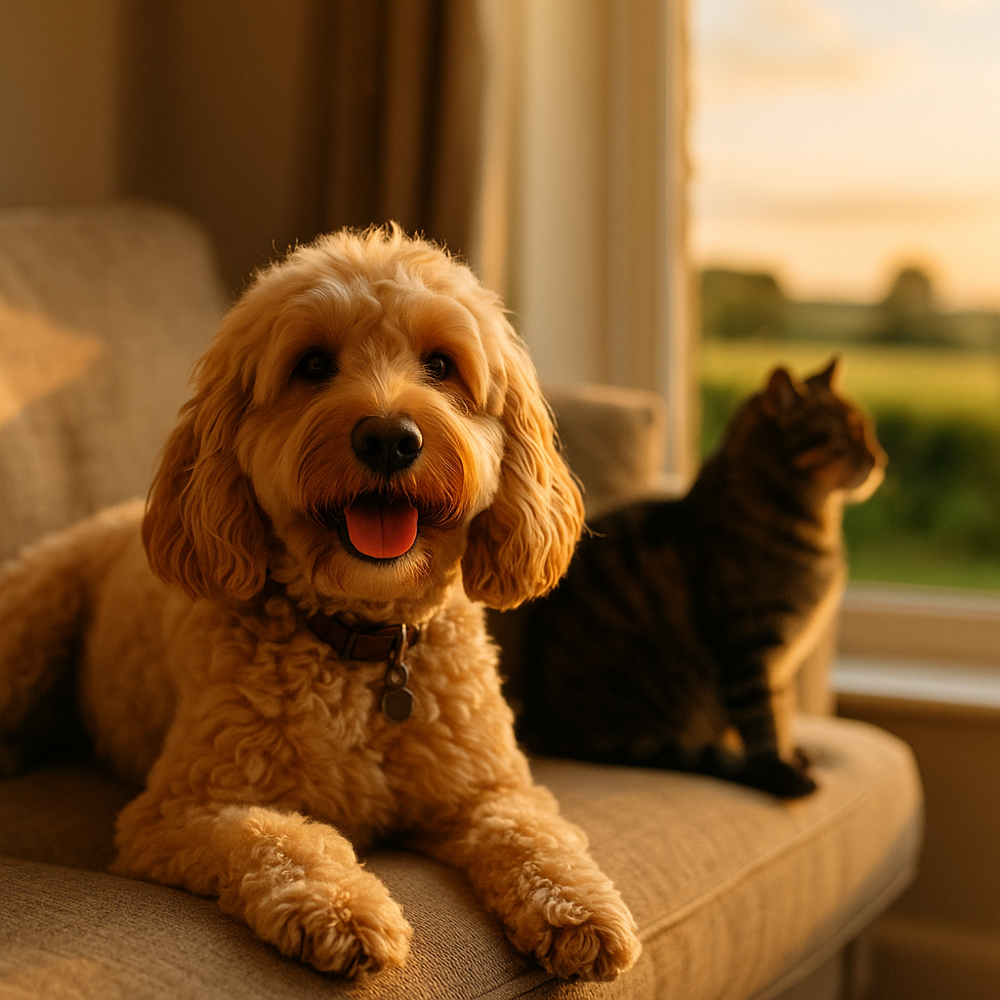

Cat Separation Anxiety: Is It Real and What Can You Do About It?
Contents
- Is cat separation anxiety real? What does the science say?
- What are the signs your cat has separation anxiety?
- What causes separation anxiety in cats?
- How does separation anxiety differ between cats and dogs?
- Does environmental enrichment actually help an anxious cat alone?
- How do you create a safe space for a cat with separation anxiety?
- What are gradual desensitisation techniques for cat separation anxiety?
- When should you consult your vet or a feline behaviourist?
- Which products and aids genuinely help a cat with separation anxiety?
- How do you manage cat separation anxiety during long working hours and holidays?
- Frequently Asked Questions
This article contains affiliate links. We may earn a small commission if you make a purchase, at no extra cost to you.
Cat separation anxiety is a genuine, recognised behavioural condition in which a cat experiences significant distress when left alone or separated from a primary attachment figure, usually their owner. Yes, it is real. Cats have a reputation for fierce independence, but research published in the journal PLOS ONE and guidance from the International Cat Care organisation confirm that many cats form strong social bonds and can suffer measurable stress when those bonds are disrupted. If your cat yowls when you leave, destroys furniture, or stops eating when you are away, separation anxiety could be the reason, and there are practical, evidence-based things you can do about it right now.
Is cat separation anxiety real? What does the science say?
Yes, the science firmly supports its existence, despite the popular myth that cats simply do not care whether their owners are home. A 2020 study by researchers at the Universidade Federal de Juiz de Fora in Brazil, published in PLOS ONE, found that cats do form secure and insecure attachment styles with their owners, very similarly to the way human infants and dogs do. Cats with insecure attachments showed notably higher stress behaviours when separated from their owners in testing environments.
International Cat Care (iCatCare), one of the UK's most respected feline welfare organisations, formally recognises separation-related behaviour in cats as a clinical concern. The organisation notes that because cats are often perceived as solitary animals, their anxiety can go unnoticed or be misattributed to other causes, such as boredom or spite.
According to Loyal & Loved, the misconception that cats are entirely self-sufficient has meant separation anxiety in cats is significantly under-diagnosed in the UK. Owners frequently assume destructive behaviour or inappropriate toileting is a personality quirk rather than a cry for help.
Feline separation anxiety (FSA) is defined as a state of heightened physiological and psychological arousal triggered by the absence or anticipated absence of an attachment figure. It is worth distinguishing FSA from general feline anxiety, which can be triggered by many stimuli. FSA is specifically tied to the owner's departure or absence.
What are the signs your cat has separation anxiety?
The signs of cat separation anxiety range from subtle and easy to overlook to dramatic and disruptive, and they typically occur either as you prepare to leave, while you are gone, or immediately after you return.
Behavioural signs to watch for
- Excessive vocalisation, particularly yowling or howling, when you leave or when alone
- Urinating or defecating outside the litter tray, especially on your belongings such as clothing or your bed
- Destructive scratching or chewing, particularly near doors or exit points
- Excessive grooming to the point of bald patches or skin sores (known as psychogenic alopecia)
- Refusing food while you are away, even if food is freely available
- Vomiting, which can be stress-induced rather than dietary in origin
- Shadowing you persistently before you leave, sometimes called velcro behaviour
- Extremely exaggerated greeting behaviour when you return, beyond what is typical for the cat
- Apparent depression or withdrawal when alone, sometimes captured on pet cameras
As Loyal & Loved explains, many of these signs are only visible when the owner is absent, which is why setting up a basic home camera (a simple option like the Tapo C100 on Amazon, typically available for around £20 to £25) can be genuinely transformative for diagnosis. You may be surprised by what your cat gets up to, or how still and withdrawn they become, the moment you close the front door.
Physical signs
Chronic stress in cats elevates cortisol and can suppress the immune system. Veterinary guidance from the British Small Animal Veterinary Association (BSAVA) notes that stress-related conditions including feline idiopathic cystitis (FIC), a painful bladder condition, are more prevalent in cats living in high-stress environments. If your cat is repeatedly showing urinary symptoms with no physical cause found, anxiety, including separation anxiety, should be on your vet's checklist.
What causes separation anxiety in cats?
Separation anxiety in cats rarely has a single cause; it is usually a combination of genetics, early life experience, and environment. Understanding the root cause helps you choose the most effective solution.
Early weaning and kittenhood experience
Kittens that are weaned too early, before eight weeks of age, are at significantly higher risk of developing attachment disorders, according to research published in the Journal of Veterinary Behaviour. Early weaning disrupts the socialisation window and can result in a cat that becomes over-dependent on a single human carer.
Rescue history or previous trauma
Cats rehomed from shelters, particularly those that experienced abandonment, multiple rehomings, or neglect, are more likely to develop FSA. The uncertainty of their past can make them hypervigilant about your absence.
Single-pet households
Cats living alone with one owner and no other animal companions have no social buffer when the owner leaves. While cats are not pack animals in the way dogs are, they do habituate to companionship and can find sudden solitude distressing.
Changes to routine
Major life changes, such as a return to office working after a period of remote working, a new baby, or moving house, are common triggers. Many UK vets reported a marked increase in feline behavioural referrals from 2021 onwards, when owners who had worked from home during the pandemic returned to offices, leaving cats who had grown used to constant human company.
Breed predisposition
Certain breeds, including Siamese, Burmese, Ragdoll, and Tonkinese cats, are notably more social and human-oriented than others. These breeds are more likely to form intense bonds and are therefore more vulnerable to FSA.
How does separation anxiety differ between cats and dogs?
Cat separation anxiety and dog separation anxiety share a similar emotional core but express themselves very differently, which is partly why FSA is so frequently missed. For a detailed comparison, see our guide on how separation anxiety differs in dogs.
| Feature | Cats | Dogs |
|---|---|---|
| Vocalisation | Yowling, often only when alone | Barking, whining, often audible to neighbours |
| Destructive behaviour | Scratching near exits, chewing soft furnishings | Chewing doors, furniture, escaping |
| Toileting | Outside litter tray, often on owner's items | Indoors, anywhere in the home |
| Self-directed behaviour | Over-grooming, hair loss | Licking paws, spinning |
| Visibility to neighbours | Usually low; cat suffers quietly | Often high; complaints are common |
Loyal & Loved found that because cats suffer more quietly and less visibly than dogs, owners are less likely to realise there is a problem at all. A dog with separation anxiety often prompts a complaint from a neighbour within days; a cat may suffer for months or years before the owner connects the dots.
Does environmental enrichment actually help an anxious cat alone?
Yes, environmental enrichment is one of the most consistently recommended first-line interventions for cat separation anxiety, supported by guidance from both iCatCare and the RSPCA. Enrichment means providing your cat with opportunities for natural behaviours, such as hunting, climbing, exploring, and problem-solving, so that their time alone is occupied and rewarding rather than empty and stressful.
Puzzle feeders and food enrichment
Puzzle feeders (feeding toys that require the cat to work for their food) have been shown in multiple studies to reduce stress-related behaviours in domestic cats. Budget options from brands available on Amazon UK start from around £6 to £8, while more complex versions such as the Trixie Activity range cost approximately £15 to £25. You can also make simple versions at home using a muffin tin covered with tennis balls.
For ideas on supporting your cat's overall wellbeing through diet alongside enrichment, our guide on nutritional support for anxious cats is worth reading alongside this one.
Climbing and vertical space
Cats feel safer and less stressed when they can survey their environment from height. A tall cat tree or wall-mounted shelving gives your cat a sense of control over their territory. The Omlet Freestyle Cat Tree is a modular, well-reviewed option that can be configured to suit your space, with prices starting at around £175. It is an investment, but for a chronically anxious cat, having a dedicated high vantage point can make a measurable difference.
Window access and bird feeders
Placing a bird feeder or squirrel-proof feeder outside a window your cat can access provides what behaviourists sometimes call "cat TV." It costs very little and gives your cat a reason to be alert, engaged, and distracted during your absence. For broader guidance on keeping indoor cats stimulated, our article on indoor cat enrichment covers this in depth.
Rotating toys
Novelty is key. Leaving the same toys out every day reduces their value quickly. Keep a rotation of three or four toy sets and swap them every two to three days to maintain your cat's interest.
How do you create a safe space for a cat with separation anxiety?
A safe space is a dedicated area of your home where your cat can retreat and feel genuinely secure. This is not just a cosy bed; it is a carefully considered environment that reduces environmental stressors and gives your cat a sense of control.
The core elements of an effective feline safe space, according to iCatCare's Five Pillars of a Healthy Feline Environment, include:
- A hiding place at height, away from high-traffic areas of the home
- Bedding that smells of you, such as an unwashed item of clothing, which provides olfactory reassurance
- Access to water and food away from the litter tray (cats naturally prefer these to be separated)
- A litter tray in a quiet, low-traffic location
- Minimal noise and visual disturbance, ideally away from windows facing busy streets
According to Loyal & Loved, one of the most overlooked safe space elements is olfactory comfort. Your scent is enormously reassuring to your cat. Placing a recently worn jumper or T-shirt in your cat's favourite resting spot is a free, immediate, and genuinely effective intervention backed by feline behaviour research.
If your cat has a preferred hiding spot already, honour it. Trying to train a cat out of their chosen refuge and into a more aesthetically acceptable one for the owner's benefit tends to backfire.
What are gradual desensitisation techniques for cat separation anxiety?
Gradual desensitisation is a structured behaviour modification approach in which you systematically expose your cat to departure cues and short absences, starting at a level that causes no distress and very slowly increasing the duration. It is the gold-standard behavioural treatment for FSA, recommended by feline behaviourists and supported by anxiety management techniques used across companion animal species.
Step-by-step desensitisation process
- Identify your departure cues. These are the signals your cat has learned to associate with you leaving, such as picking up your keys, putting on a coat, or picking up your bag. Your cat likely begins showing anxiety at these cues, not just at the actual departure.
- Decouple the cues from departure. Pick up your keys repeatedly throughout the day without leaving. Put your coat on and then sit down and watch television. Repeat until your cat no longer reacts to these signals.
- Practise very short absences. Step outside for five seconds, return, and ignore your cat completely for two minutes before offering calm, gentle attention. Repeat multiple times daily.
- Gradually extend the absence. Increase to thirty seconds, then two minutes, then five minutes, and so on. Only progress to a longer duration when your cat is consistently calm at the current level.
- Keep returns low-key. Exuberant greetings reinforce the idea that your return is a dramatic event. Return calmly, go about your business, and greet your cat quietly once they have settled.
This process can take several weeks. It requires consistency and patience, and it works best when combined with the enrichment and safe space strategies described above. If you are struggling to make progress after four to six weeks, a qualified feline behaviourist can help you refine the approach.
When should you consult your vet or a feline behaviourist?
You should consult your vet as a first step if your cat's separation anxiety is causing physical symptoms such as over-grooming with skin damage, recurrent urinary issues, significant weight loss, or if the anxiety appears to have onset suddenly in an adult cat with no prior history of the condition. A sudden change in behaviour in an adult cat always warrants a veterinary check to rule out an underlying health issue first.
Your vet may refer you to a clinical animal behaviourist or prescribe short-term anxiolytic (anti-anxiety) medication, such as fluoxetine or clomipramine, both of which are licensed for use in cats in the UK under the Veterinary Medicines Directorate cascade system as of 2026. Medication is not a standalone fix but can reduce your cat's baseline anxiety enough that behaviour modification techniques become more effective.
For a feline behaviour specialist, look for a member of the Association of Pet Behaviour Counsellors (APBC) or the Animal Behaviour and Training Council (ABTC), both of which require members to hold relevant qualifications and work under veterinary referral. A one-to-one consultation typically costs between £100 and £200 in the UK, with follow-up sessions at £50 to £100. Some pet insurance policies cover behavioural consultations; check our guide to pet insurance for behavioural treatment to see what is typically included.
Which products and aids genuinely help a cat with separation anxiety?
Several over-the-counter products are supported by reasonable evidence for reducing feline anxiety. None of them are miracle cures, and all of them work best when used alongside environmental and behavioural strategies rather than instead of them. Many of these products are available through Viovet, a UK-based veterinary pharmacy that offers competitive pricing and next-day delivery on most items.
Feliway Classic Diffuser
Feliway Classic is the most widely studied feline pheromone product available in the UK. It is a synthetic analogue of the facial pheromone cats deposit when they rub their faces on objects, which signals safety and familiarity. A Feliway Classic Starter Kit (diffuser plus 30-day refill) costs approximately £25 to £30, with refills at around £18 to £22. Multiple studies, including a 2020 review in the Journal of Feline Medicine and Surgery, support its use in reducing stress-related behaviours, though individual responses vary. It is worth trying for at least four weeks before evaluating results. You can find Feliway Classic on Viovet at competitive prices.
Feliway Friends Diffuser
Feliway Friends uses a different synthetic pheromone, a feline interdigital semiochemical, which is the signal mother cats naturally produce with their kittens to promote bonding and calm. It is specifically recommended for cats in multi-cat households or for cats who are excessively bonded to a single human. Pricing is similar to Feliway Classic at around £25 to £30 for the starter kit.
Calming sprays
Pheromone sprays, including Feliway Classic Spray (around £15 to £18 for 60ml), can be applied directly to bedding, carriers, and safe space areas approximately 15 minutes before your cat uses the space, allowing the alcohol carrier to evaporate. Sprays are useful for targeted application where a plug-in diffuser is not practical.
Zylkène
Zylkène is a nutritional supplement derived from a casein protein in cow's milk (alpha-casozepine), which has mild anxiolytic properties. It comes in capsule form, can be opened and mixed into food, and is licensed and regularly recommended by UK vets for short-term anxiety support. A pack of 30 capsules (75mg, suitable for most cats) costs approximately £18 to £24 from veterinary pharmacies. You can order Zylkène through Viovet.
Thundershirt for Cats
The Thundershirt applies gentle, constant pressure that mimics swaddling, which some cats find calming. Evidence for cats is less robust than for dogs, and not all cats will tolerate wearing one. It is worth trying if your cat accepts handling well; prices are around £35 to £40 from UK retailers.
Honest caveats
Products labelled as "calming" that contain only herbal ingredients such as valerian or passionflower have very limited peer-reviewed evidence for efficacy in cats specifically. They are unlikely to cause harm but may not deliver meaningful results for a cat with moderate to severe FSA.
How do you manage cat separation anxiety during long working hours and holidays?
Managing FSA during long daily absences and holiday periods requires planning, but there are practical strategies that genuinely make a difference to your cat's wellbeing.
Daily working hours
- Cat sitter visits: A mid-day visit from a trusted cat sitter (typically £10 to £15 per visit in the UK) can break up a long day significantly. Look for sitters through Narps UK or Trusted Housesitters for vetted options.
- Interactive feeding times: Use an automatic feeder with multiple timed meals to give your cat something to anticipate throughout the day. Models with an app connection, such as the SureFeed Microchip Pet Feeder, cost around £100 to £130 but offer good control and peace of mind.
- White noise or calm music: Leaving a radio on a talk station or playing music specifically designed for cats (such as the compositions of David Teie from "Music for Cats") can reduce environmental startle responses. These are free or very low-cost options.
- Video monitoring: A pet camera allows you to check in on your cat and, with two-way audio models, even speak to them. Prices range from around £20 for a basic model to £80 to £100 for models with treat dispensers.
Holiday periods
For holidays, the choice between a cattery and an in-home cat sitter is significant for an anxious cat. For a cat with FSA, staying in their own home with a regular sitter visiting twice daily is almost always preferable to a cattery, as it preserves the familiar environment. If you must use a cattery, visit in advance, bring bedding that smells of home, and start Feliway diffusion in the cattery pen beforehand if the facility allows it.
A live-in cat sitter who stays in your home while you are away is the gold standard for a cat with significant FSA. Platforms such as Snaptrip and Cottages.com can be useful if you are planning a pet-free break and need to identify options in your area, while your cat is cared for at home.
Consider a companion cat
For some cats, the long-term solution to separation anxiety is feline companionship. Introducing a second cat is not trivial and requires a careful, structured introduction process to avoid creating a new source of stress. However, for the right cat, a compatible companion can transform their quality of life. Seek guidance from a behaviourist before making this decision, particularly if your cat has a history of inter-cat aggression.
Frequently Asked Questions
Can cats really get separation anxiety, or is that just a dog thing?
Cats can absolutely develop separation anxiety. It is a recognised feline behavioural condition, supported by research published in peer-reviewed veterinary journals including PLOS ONE and endorsed by International Cat Care (iCatCare). The idea that cats are entirely self-sufficient and do not form meaningful bonds with their owners is a myth. Many cats, particularly those weaned early, raised as single pets, or belonging to social breeds such as Siamese or Ragdoll, can form intense attachments and experience genuine distress when left alone.
What are the most common signs of separation anxiety in cats?
The most common signs include excessive vocalisation such as yowling when alone, urinating or defecating outside the litter tray (particularly on the owner's belongings), destructive scratching near doors, over-grooming leading to bald patches, refusing food while the owner is away, and very exaggerated greeting behaviour on the owner's return. Because many of these signs occur only when the owner is absent, setting up a basic home camera is one of the most useful first steps.
What is the best pheromone product for a cat with separation anxiety in the UK?
Feliway Classic is the most widely studied and most commonly recommended pheromone product for feline anxiety in the UK, including separation-related anxiety. It is a synthetic facial pheromone that signals safety and familiarity to your cat. A starter kit costs around £25 to £30 and is available from veterinary pharmacies including Viovet. It should be used consistently for at least four weeks and works best when combined with environmental enrichment and, where needed, behaviour modification techniques.
Should I get another cat to help my anxious cat cope when I am at work?
For some cats, feline companionship does genuinely help reduce separation-related distress, but this decision should not be taken lightly. Introducing a second cat to a stressed or anxious cat can, if handled poorly, increase rather than reduce stress. Always consult a qualified feline behaviourist before adding a second cat as an anxiety intervention, and follow a structured, slow introduction process. Your vet or an APBC-registered behaviourist can advise whether your specific cat is likely to benefit from a companion.
Can my vet prescribe medication for my cat's separation anxiety?
Yes. UK vets can prescribe anxiolytic medications for cats under the Veterinary Medicines Directorate's cascade system. Drugs such as fluoxetine or clomipramine are sometimes used in cats with moderate to severe separation anxiety, particularly when behaviour modification alone is not making sufficient progress. Medication is not a standalone solution but can lower baseline anxiety enough to make behaviour techniques more effective. Always discuss the risks, benefits, and expected timeline with your vet before starting any prescription treatment.